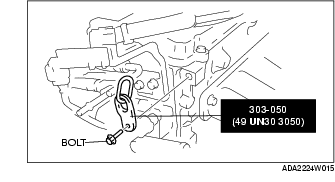

Engine disassembly/assembly [ZY]
1. Using the bolts part number 99794 1025 or M10×1.25, length 25 mm {0.99 in} to install the SST to the position shown in the figure, hang the engine and transaxle, and then take it down from the engine jack.


Tightening torque
2. Remove the engine from the transaxle. (See MANUAL TRANSAXLE REMOVAL/INSTALLATION [F35M-R].) (See AUTOMATIC TRANSAXLE REMOVAL/INSTALLATION [FN4A-EL].)
3. Remove the EGR pipe and EGR valve bracket. (With EGR) (See INTAKE-AIR SYSTEM REMOVAL/INSTALLATION [ZY].) (See EXHAUST SYSTEM REMOVAL/INSTALLATION [ZY].) (See EGR VALVE REMOVAL/INSTALLATION [ZY].)
4. Remove the intake-air system. (See INTAKE-AIR SYSTEM REMOVAL/INSTALLATION [ZY].)
5. Remove the exhaust system. (See EXHAUST SYSTEM REMOVAL/INSTALLATION [ZY].)
6. Remove the generator. (See GENERATOR REMOVAL/INSTALLATION [ZY].)
7. Remove the ignition coil. (See IGNITION COIL REMOVAL/INSTALLATION [ZY].)
8. Remove the crankshaft position (CKP) sensor. (See CRANKSHAFT POSITION (CKP) SENSOR INSPECTION [ZY].)
9. Install in the reverse order of removal.